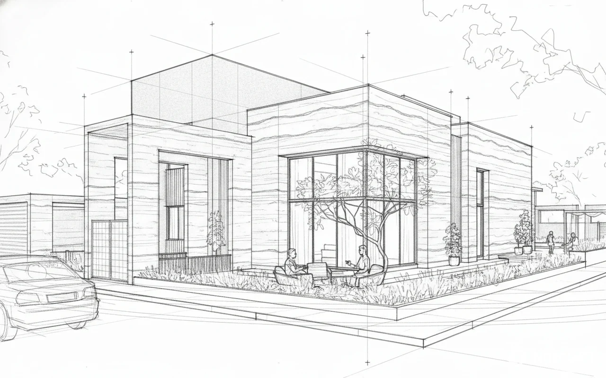
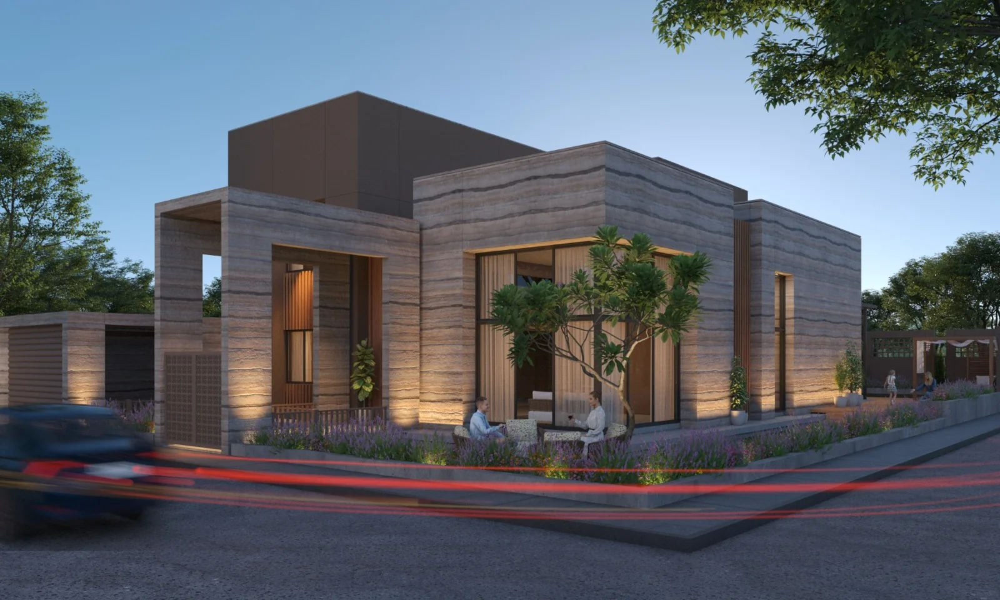
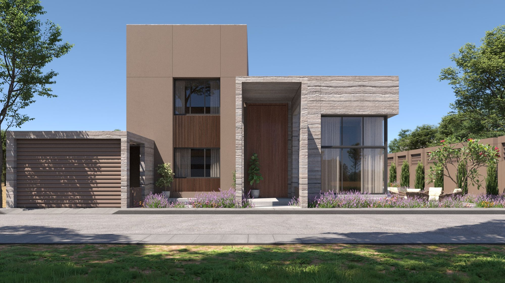
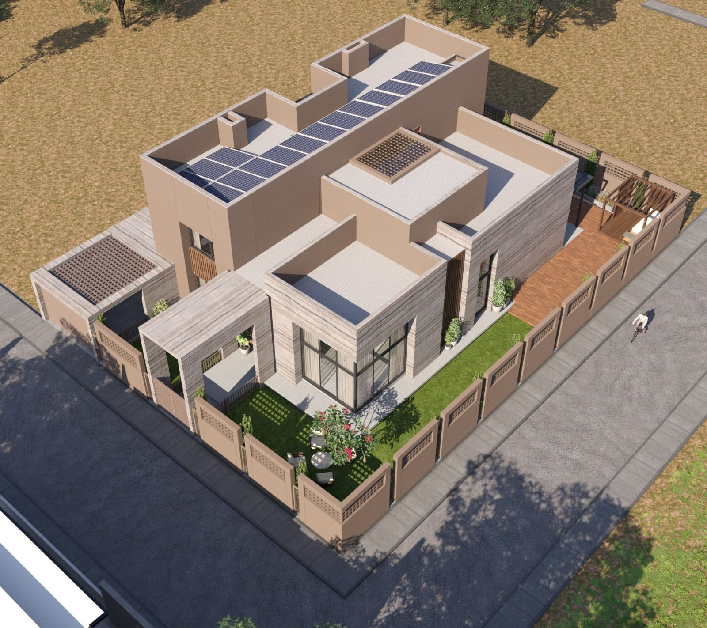

A grounded, earthen villa turned inward to a private courtyard.
The project
On a generous 6,460 sq ft plot in Adarsh Society, the house turns inward to a sheltered courtyard and Zen garden. Clay-toned render meets banded, rammed-earth-textured stone and teak, and a stone entrance portal frames a full-height timber door.
The palette is deliberately of the earth. Living spaces open through full-height glazing to the garden while a jaali compound wall gives privacy. Planned to Vastu and built to breathe: cavity walls and soundproofing calm the interior, rainwater harvesting and rooftop solar make it self-sufficient, and generous landscape wraps the house.
Principal Designer Bhavin Swami · Senior Architect
Concept
A hand study of the courtyard corner, the striated stone bands, deep glazing and the sheltered garden drawn before the render.
Visualisation



The approach
Accommodation